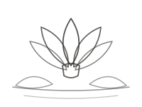

没有杀戮，没有交易，只有感恩。
—— 雨花斋核心理念雨花斋以“恭敬生命，感恩吃素”为宗旨，以“拒绝杀戮，没有交易，只有爱心”为核心，不以盈利为目的。
倡导健康生活、低碳环保、关爱生命、圆满心灵、和谐社会、保护地球，从我做起。一碗素饭里，盛着对生命的敬意，也盛着对社会的温情。
The Five "Enough"
五了精神
吃了就好，做了就好，舍了就好，够了就好，了了就好。
01
吃了就好
珍惜眼前这一餐，感念种菜、烹饪、运送与服务的每一份付出。
02
做了就好
躬身力行，在服务他人的过程中，成就自己的身心。
03
舍了就好
学会放下与分享，在给予中体会丰盛，在舍得中收获自在。
04
够了就好
知足常乐，珍惜当下所有，不贪求、不浪费、不攀比。
05
了了就好
了却牵挂，安住当下，心安处即是家。
06
和乐为家
以“和乐家”为人生价值观，让爱在家的港湾里停泊，影响千万个家成为和乐之家。

敬老助老
多为社区空巢、鳏寡、孤独老人提供免费餐食。许多雨花斋为年满六十周岁的老人免费供餐，并延伸出送餐到家、理发、洗脚、剪指甲等服务。低龄老人服务高龄老人，让晚年多一份陪伴。

慈善救助
洪灾来临时，雨花斋为抗洪勇士和受灾群众生火做饭，并将餐食送到一线；春节期间为独居、行动不便的高龄老人每日送餐上门；也为城市骑士送上现熬的热粥与节日的问候。
拒绝交易，但不拒绝爱心。
—— 雨花斋的坚持善意，从不嫌小
一粒米、一棵菜、一段时间，都是对这个世界温柔的回应。